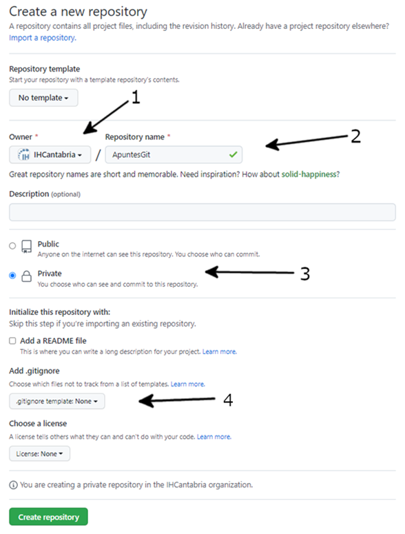
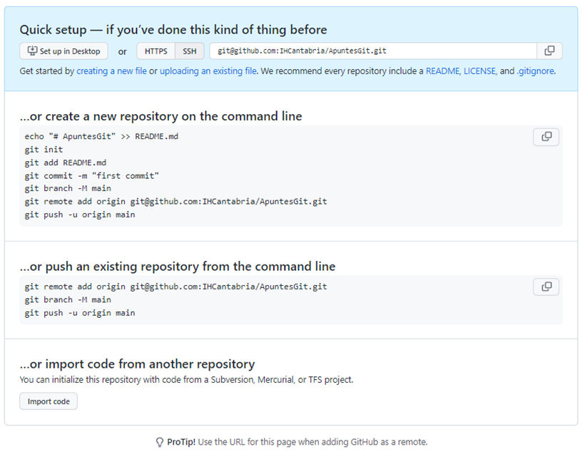
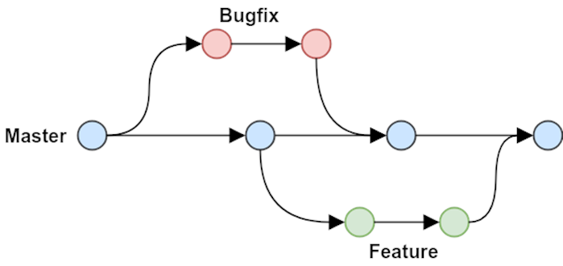

Flujo de trabajo
Crear un nuevo repositorio
Para añadir un nuevo repositorio, desde la web de GitHub, en la esquina superior derecha, disponemos de un botón para crear nuevo repositorio.
En el formulario deberemos modificar los siguientes parámetros:
Propietario IHCantabria
Nombre proyecto, CamelCase.Tipo
Visibilidad del repositorio
Plantilla de .gitignore

Tras ello, en la siguiente pantalla veremos las instrucciones para:
En caso de que no existiera el repositorio.
En caso de que ya tuviéramos un repositorio en nuestro equipo, cómo vincularlo.

Trabajando con ramas
A la hora de trabajar en el repositorio, utilizamos siempre ramas, no trabajamos directamente sobre la rama principal, ésta debe tener el código listo para producción.

Así pues, los pasos a realizar:
Creamos el
branchdesde la rama principal.El nombre del
branchdebe ser corto y descriptivo.Una vez unido los cambios a main, eliminar el
branch.Solo desplegamos versiones etiquetadas.